SYSNIX - Création d'un disque externe USB bootable
dominique huguenin (dominique.huguenin@rpn.ch) -Note d’installation
Il semble que l’installation ne fonctionne pas avec Ubuntu 20.04. Nous installerons Ubuntu 18.04 puis nous ferrons une mise à jour du système.
installation du 2021-09-03
Plan de partitionnement
.------------------------------------------------------------------------------------------------------------------.
| /dev/sdx |
+------------------------------------------------------------------------------------------------------+-----------+
| /dev/sdx1 (partition étendue) |
+-----------+-----------+----------------------------------------------------------------+-------------+
| /dev/sdx5 | /dev/sdx6 | /dev/sdx7 | /dev/sdx8 |
| 200M | 1G | 200G | 70G |
| | +----------------------------------------------------------------+-------------+
| | | LVM | non utilisé |
| | +----------------------------------------------------------------+-------------+
| | | mc0-0315-usb-vg (VG) |
| | +---------------+----------------+-----------------+-------------+
| | | swap (2G)(LV) | root (50G)(LV) | home (100G)(LV) |
+-----------+-----------+---------------+----------------+-----------------+
|EFI(fat32) | ext2 | swap | ext4 | ext4 |
+-----------+-----------+---------------+----------------+-----------------+
|/boot/efi | /boot | | /root | /home |
+-----------+-----------+---------------+----------------+-----------------+
Étapes
- Créer un partition UEFI
- Installation du système d’exploitation
- Configuration pour faire démarrer la machine sur le disque externe
Capsule vidéo
Les vidéos ci-dessous montrent les manipulations décrites dans ce document.
Création de la partition UEFI
Cette étape pourra également durant l’installation
-
Rechercher le nom du disque externe. Dans notre cas c’est /dev/sda
dom@domx1:~$ sudo fdisk -l [sudo] Mot de passe de dom : ... Disque /dev/sda : 465.7 GiB, 500074283008 octets, 976707584 secteurs Unités : secteur de 1 × 512 = 512 octets Taille de secteur (logique / physique) : 512 octets / 512 octets taille d'E/S (minimale / optimale) : 512 octets / 512 octets Type d'étiquette de disque : gpt Identifiant de disque : D3F31D3C-1C22-44E9-8805-A7AB870D83A6
Créer un partition UEFI avec parted
-
démarrer parted sur le disque /dev/sda
dom@domx1:~$ sudo parted /dev/sda GNU Parted 3.2 Utilisation de /dev/sda Bienvenue sur GNU Parted ! Tapez « help » pour voir la liste des commandes. (parted) print Modèle : WD Elements 25A2 (scsi) Disque /dev/sda : 500GB Taille des secteurs (logiques/physiques) : 512B/512B Table de partitions : gpt Drapeaux de disque : -
créer un table de type gpt
(parted) help mktable mklabel,mktable LABEL-TYPE crée une nouvelle étiquette de disque (table de partition) LABEL-TYPE est une des valeurs : atari, aix, amiga, bsd, dvh, gpt, mac, msdos, pc98, sun, loop (parted) mktable gpt Avertissement: Le type du disque /dev/sda va être effacé et toutes les données vont être perdues. Voulez-vous continuer ? Oui/Yes/Non/No? y -
créer une partion primaire de 200M
(parted) help mkpart mkpart PART-TYPE [FS-TYPE] DEBUT FIN créer une partition PART-TYPE est une des valeurs : primaire, logique, étendue FS-TYPE est parmi : zfs, btrfs, nilfs2, ext4, ext3, ext2, fat32, fat16, hfsx, hfs+, hfs, jfs, swsusp, linux-swap(v1), linux-swap(v0), ntfs, reiserfs, freebsd-ufs, hp-ufs, sun-ufs, xfs, apfs2, apfs1, asfs, amufs5, amufs4, amufs3, amufs2, amufs1, amufs0, amufs, affs7, affs6, affs5, affs4, affs3, affs2, affs1, affs0, linux-swap, linux-swap(new), linux-swap(old) DEBUT et FIN sont des emplacements sur un disque, comme 4GB ou 10%. Les valeurs négatives se comptent à partir de la fin du disque. Par exemple, =-1s spécifie précisément le dernier secteur. « mkpart » crée une partition sans créer un nouveau système de fichiers sur la partition. FS-TYPE doit être spécifié pour initialiser le type de partition approprié. (parted) mkpart primaire fat32 0 200M Avertissement: L'alignement de la partition ainsi définie n'est pas optimal au niveau performance. Ignorer/Ignore/Annuler/Cancel? Ignore (parted) print Modèle : WD Elements 25A2 (scsi) Disque /dev/sda : 500GB Taille des secteurs (logiques/physiques) : 512B/512B Table de partitions : gpt Drapeaux de disque : Numéro Début Fin Taille Système de fichiers Nom Drapeaux 1 17.4kB 200MB 200MB fat32 primaire -
définir les flags
bootetespde la partition(parted) help set set NUMÉRO DRAPEAU ÉTAT modifier le DRAPEAU de la partition NUMÉRO NUMÉRO est le numéro de partition utilisé par Linux. Avec une étiquette de disque MS-DOS, les partitions primaires sont numérotées de 1 à 4 et les partitions logiques à partir de 5. DRAPEAU est une des valeurs : démarrage, racine, swap, caché, raid, lvm, lba, hp-service, palo, prep, msftres, bios_grub, atvrecv, diag, legacy_boot, msftdata, irst, esp ÉTAT est une des valeurs : on, off (parted) set 1 boot on (parted) set 1 esp on (parted) print Modèle : WD Elements 25A2 (scsi) Disque /dev/sda : 500GB Taille des secteurs (logiques/physiques) : 512B/512B Table de partitions : gpt Drapeaux de disque : Numéro Début Fin Taille Système de fichiers Nom Drapeaux 1 17.4kB 200MB 200MB fat32 primaire démarrage, esp
Installation du système d’exploitation
Faire une installation du système d’exploitation sur le disque externe à l’aide de virtualbox
- Télécharger Ubuntu 18.04 LTS (Bionic Beaver) Netboot. Renommer le fichier
mini.isoenubuntu-18.04-netinstall.iso
Utiliser la dernière version LTS Ubuntu 20.04 LTS (Focal Fossa) Netboot (legacy) Il semble que l’installation ne fonctionne pas avec 20.04
-
Installer les paquets pour virtualbox
$ sudo apt install virtualbox virtualbox-guest-additions-iso virtualbox-ext-pack $ sudo usermod -a -G vboxusers $USER $ sudo modprobe vboxdrvAprès l’installation redémarrer la machine
-
vérifier la accessibilité du disque externe par virtualbox
dom@domx1:~$ VBoxManage list usbhost Host USB Devices: ... UUID: f3135cb8-e9fd-49b7-a933-daa361dfabc1 VendorId: 0x1058 (1058) ProductId: 0x25a2 (25A2) Revision: 16.33 (1633) Port: 2 USB version/speed: 3/Super Manufacturer: Western Digital Product: Elements 25A2 SerialNumber: 5758393145413735465A5544 Address: sysfs:/sys/devices/pci0000:00/0000:00:14.0/usb2/2-3//device:/dev/vboxusb/002/002 Current State: Busy ...
Créer la machine virtuelle avec virtualbox
-
Création de la machine virtuel
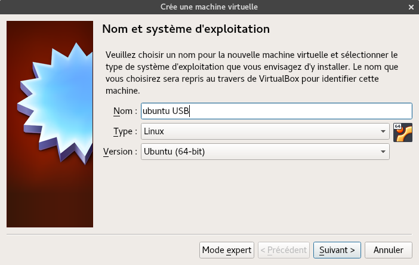
-
Configuration de la taille mémoire. Cette valeur permet d’accélérer l’installation
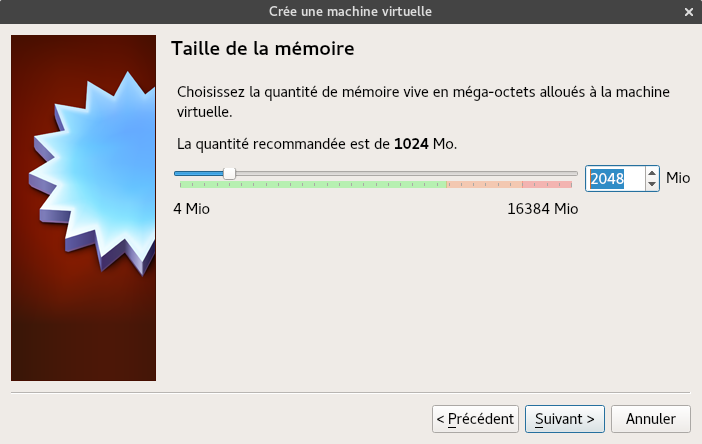
-
Ajout d’aucun disque n’est ajouter à notre vm. Le stockage se fera sur notre disque externe usb
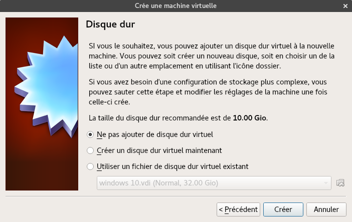
-
Validation de l’avertissement
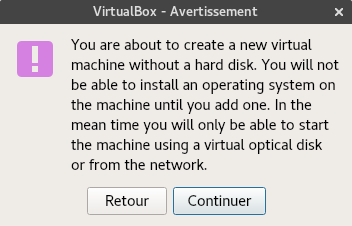
-
Configuration des nombres de processeurs. Cette valeur permet d’accélérer l’installation
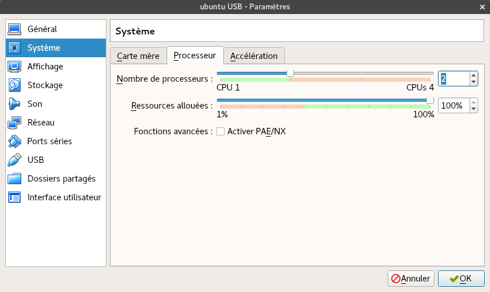
-
Configuration de la mémoire vidéo et l’activation de l’accélération 3D. Cette valeur permet d’accélérer l’installation
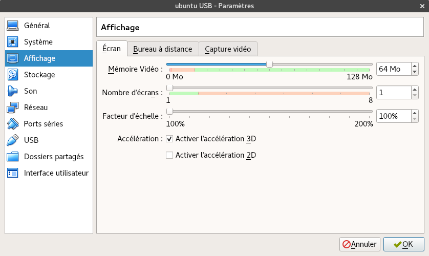
-
Configuration du CD-ROM d’installation. Ce image iso a été téléchargé préalablement.
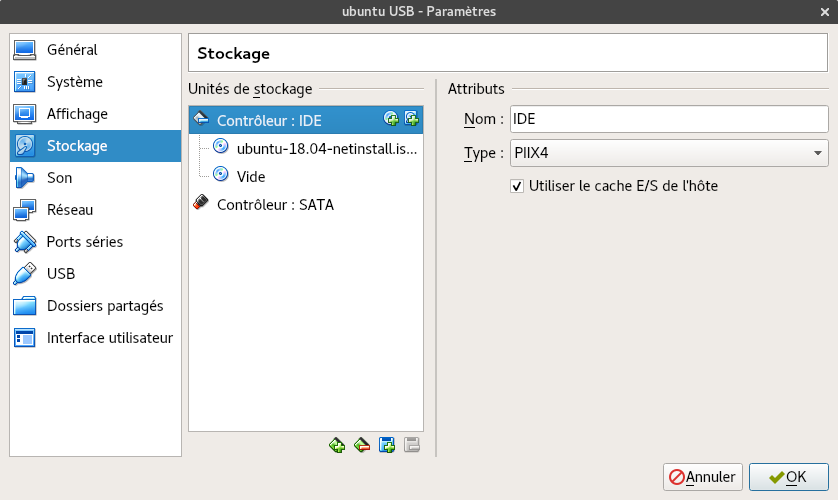
-
Configuration du stockage USB. Le périphérique est celui identifié avec la commande
VBoxManage. J’ai également activé le controleur 3.0 (xHCI)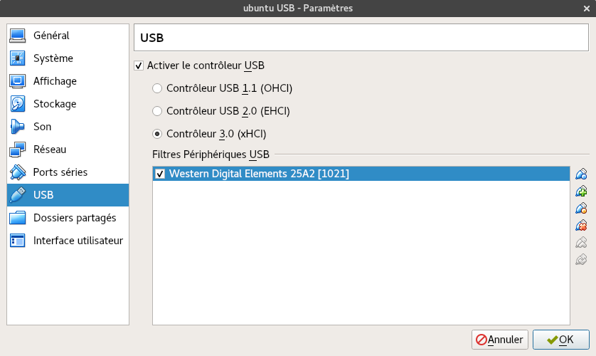
-
Configuration final de la machine virtuelle
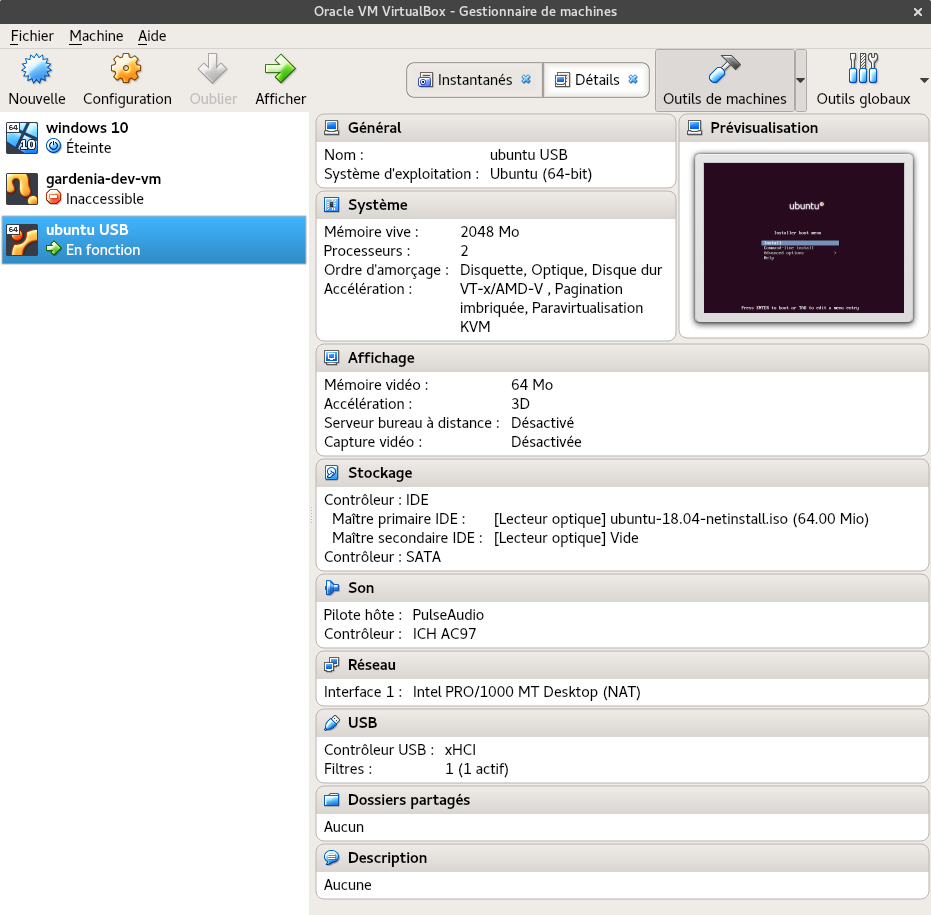
-
Démarrer la machine virtuelle
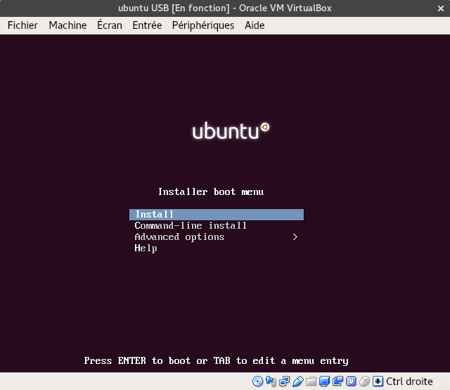
Installation du système
Pour l’installation du système suivre le document SYSNIX - OS - Installation GNU/Linux Ubuntu Server
Si la partition UEFI n’est pas créé au préalable, il faudra la créer durant la phase de partitionnement.
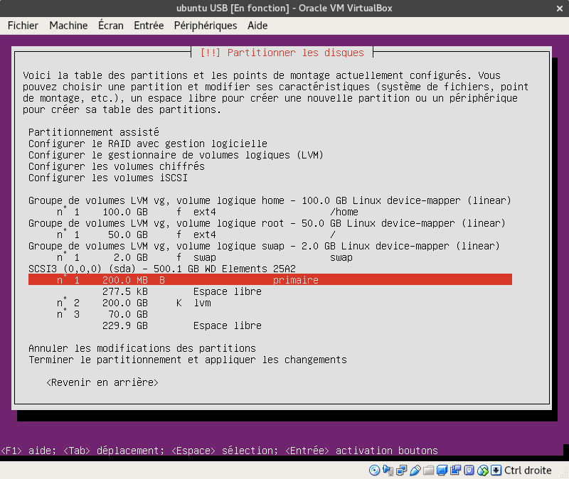
-
Répondre non à la question Installer le programme de démarrage GRUB.
-
Terminer l’installation.
La machine virtuelle va redémarrer. A ce momment, choisir Advanced options>Rescue mode et valider. Le mode récupération est démarré. Il va poser les mêmes questions qu’au début de l’installation.
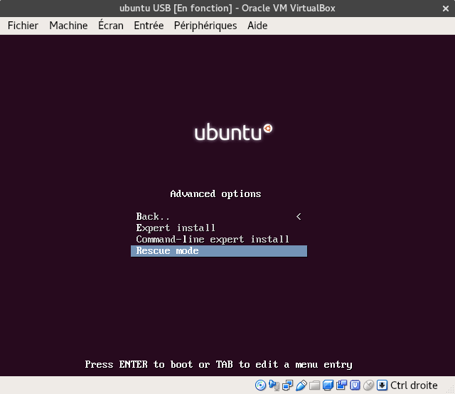
Configuration pour faire démarrer la machine sur le disque externe
Dans Entrer dans le mode récupération
-
Périphérique à monter comme système de fichier racine (/), dans notre installation choisir /dev/vg/root
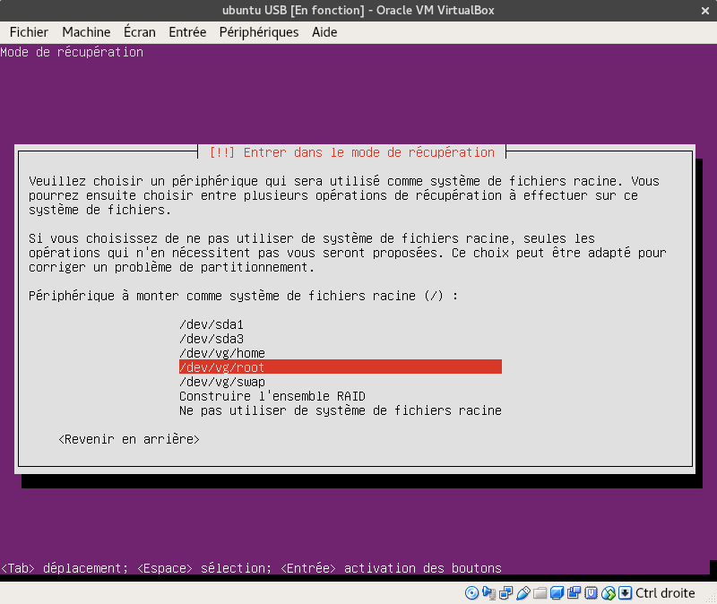
-
Exécuter un shell dans /dev/vg/root
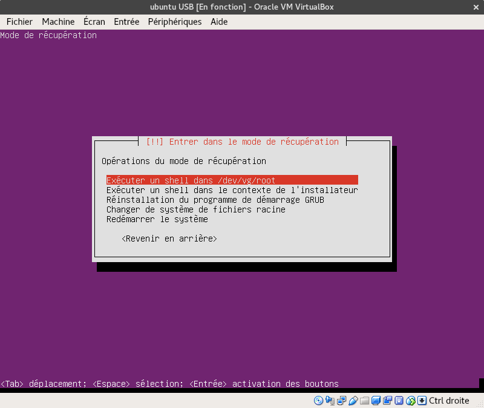
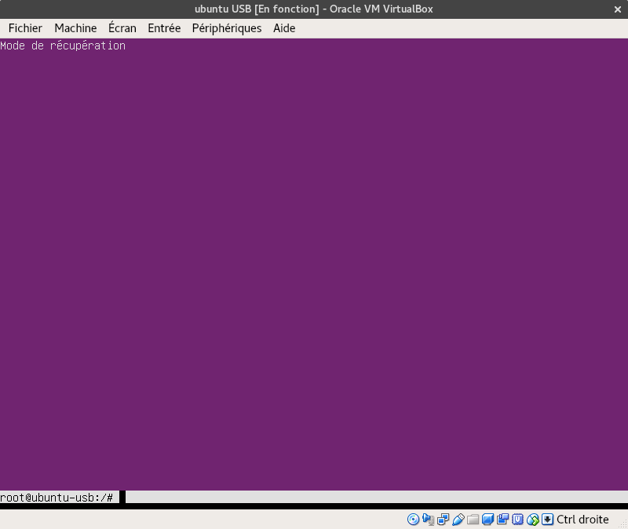
Préparation du shell
-
monter des ressources
root@ubuntu-usb:/# mount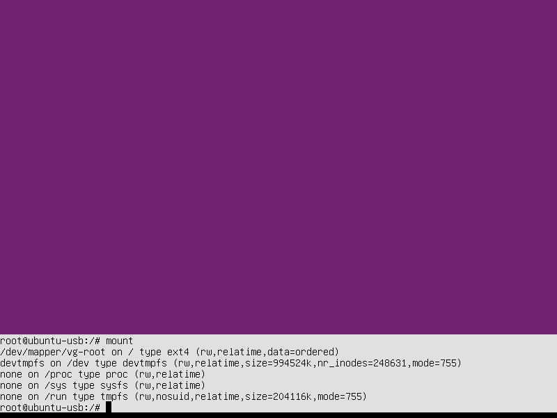
root@ubuntu-usb:/# mount -o remount,rw / root@ubuntu-usb:/# mount --all root@ubuntu-usb:/# mount -B /dev /dev root@ubuntu-usb:/# mount -B /dev/pts /dev/pts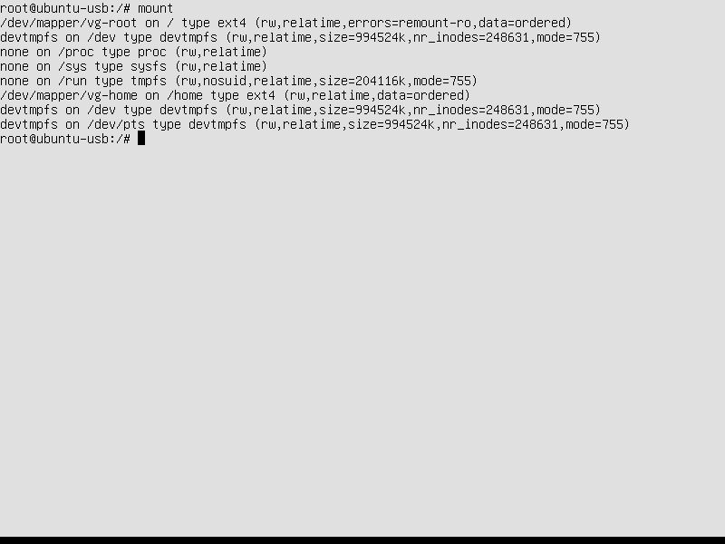
installation des paquets manquants
-
Rechercher les adresses ip pour les domaine
ch.archive.ubuntu.cometsecurity.ubuntu.comdom@domx1:intprog1ap1$ dig ch.archive.ubuntu.com ; <<>> DiG 9.11.3-1ubuntu1.11-Ubuntu <<>> ch.archive.ubuntu.com ;; global options: +cmd ;; Got answer: ;; ->>HEADER<<- opcode: QUERY, status: NOERROR, id: 63161 ;; flags: qr rd ra; QUERY: 1, ANSWER: 2, AUTHORITY: 0, ADDITIONAL: 1 ;; OPT PSEUDOSECTION: ; EDNS: version: 0, flags:; udp: 65494 ;; QUESTION SECTION: ;ch.archive.ubuntu.com. IN A ;; ANSWER SECTION: ch.archive.ubuntu.com. 467 IN CNAME mirror.init7.net. mirror.init7.net. 1275 IN A 109.202.202.202 ;; Query time: 8 msec ;; SERVER: 127.0.0.53#53(127.0.0.53) ;; WHEN: Thu Mar 19 11:24:51 CET 2020 ;; MSG SIZE rcvd: 96 dom@domx1:intprog1ap1$ dig security.ubuntu.com ; <<>> DiG 9.11.3-1ubuntu1.11-Ubuntu <<>> security.ubuntu.com ;; global options: +cmd ;; Got answer: ;; ->>HEADER<<- opcode: QUERY, status: NOERROR, id: 7841 ;; flags: qr rd ra; QUERY: 1, ANSWER: 4, AUTHORITY: 0, ADDITIONAL: 1 ;; OPT PSEUDOSECTION: ; EDNS: version: 0, flags:; udp: 65494 ;; QUESTION SECTION: ;security.ubuntu.com. IN A ;; ANSWER SECTION: security.ubuntu.com. 40 IN A 91.189.88.152 security.ubuntu.com. 40 IN A 91.189.91.39 security.ubuntu.com. 40 IN A 91.189.88.142 security.ubuntu.com. 40 IN A 91.189.91.38 ;; Query time: 7 msec ;; SERVER: 127.0.0.53#53(127.0.0.53) ;; WHEN: Thu Mar 19 11:25:20 CET 2020 ;; MSG SIZE rcvd: 112 -
ajouter dans le fichier
/etc/hostsde la vm les lignes suivantes:root@ubuntu-usb:/# vim /etc/hosts109.202.202.202 ch.archive.ubuntu.com 91.189.88.152 security.ubuntu.com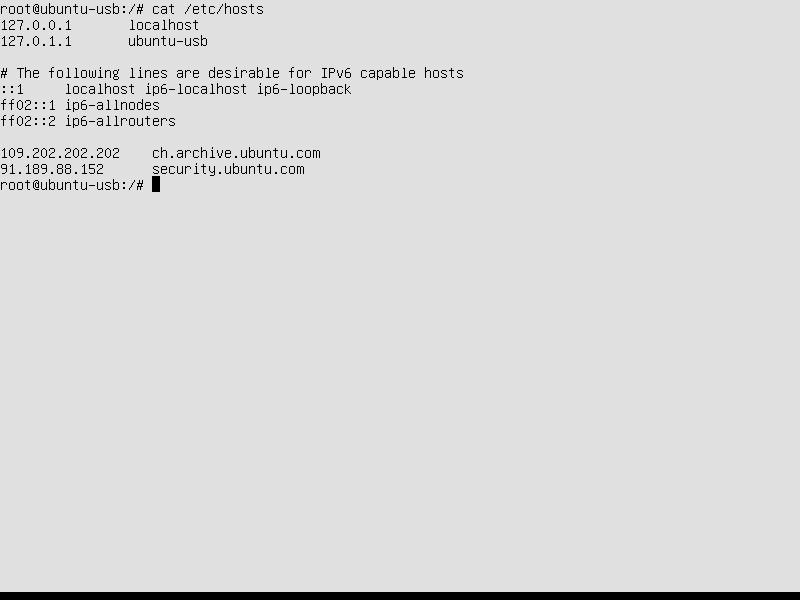
-
mise à jour du catalogue
root@ubuntu-usb:/# apt update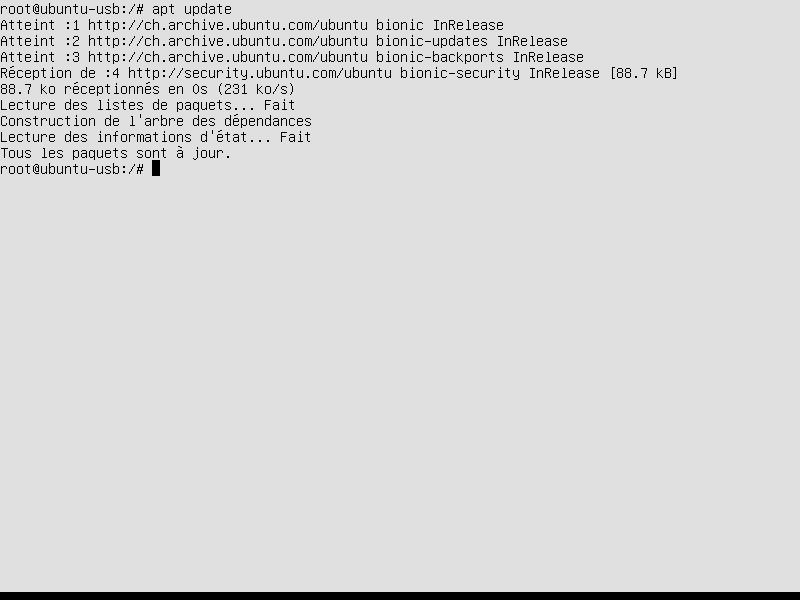
-
installation du paquet
grub-efi-amd64root@ubuntu-usb:/# apt install grub-efi-amd64
Configuration de la partition UEFI
Si la partition n’a pas été créer au préalable, créer la.
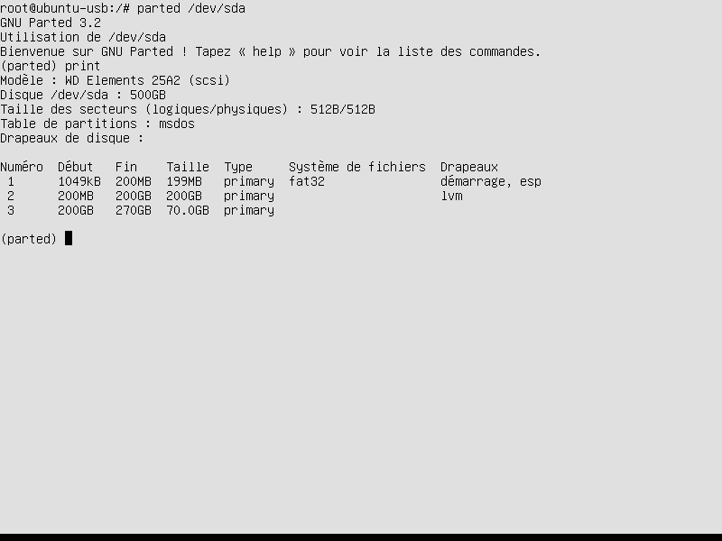
-
ajouter la partition UEFI dans le fichier
/etc/fstab-
repérer UUID de la partion UEFI
root@ubuntu-usb:/# blkid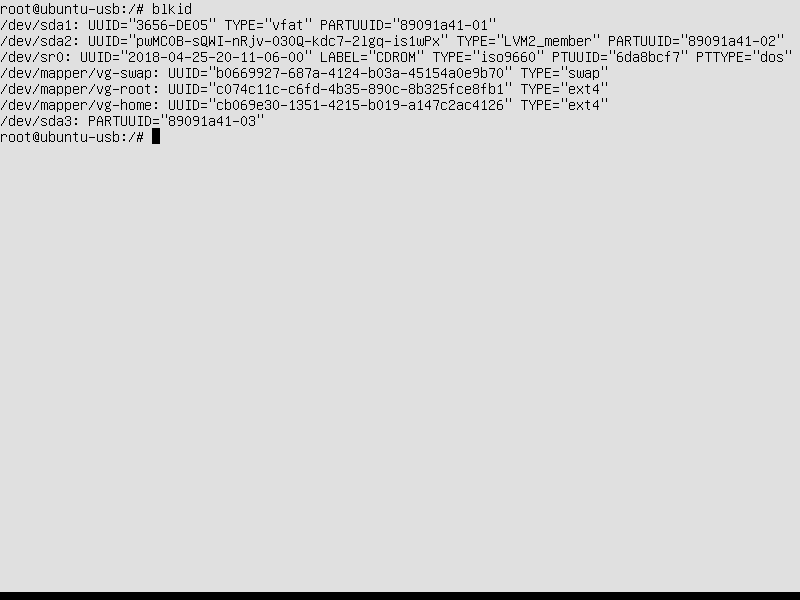
Ajout ligne ci-dessous dans le fichier /etc/fstab
UUID=3656-DE05 /boot/efi vfat defaults 0 1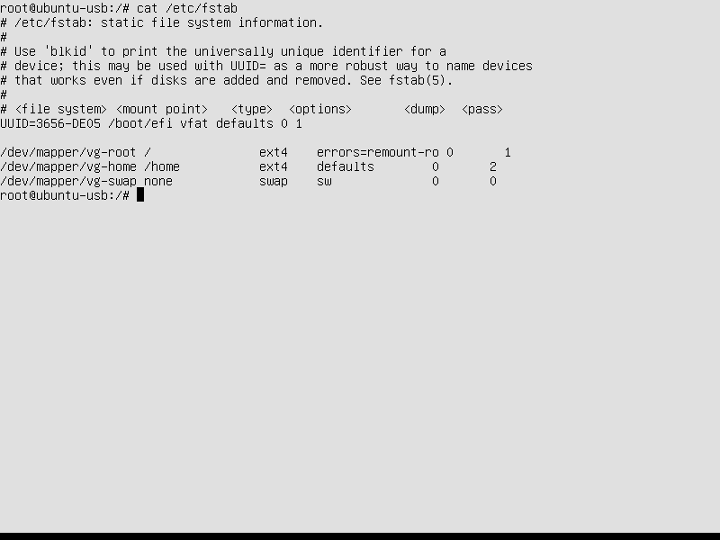
-
monter la partition UEFI
root@ubuntu-usb:/# mkdir /boot/efi root@ubuntu-usb:/# mount /dev/sda1 /boot/efi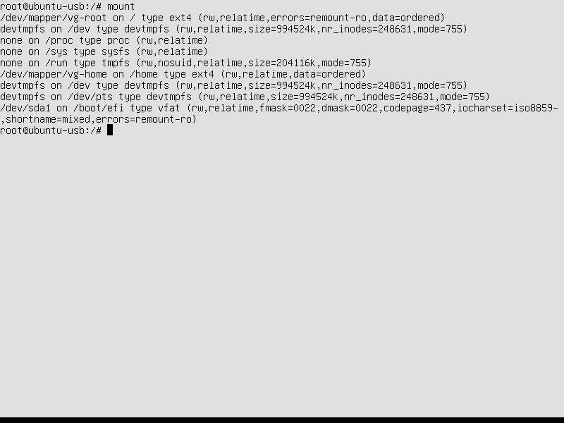
-
-
installation du grub
root@ubuntu-usb:/# grub-install -d /usr/lib/grub/x86_64-efi --efi-directory=/boot/efi/ --removable /dev/sda
Vérification et post-installation
- Démarrer votre machine sur le disque externe USB
Configurer le réseau
-
retirer dans le fichier
/etc/hostsde la vm les lignes suivantes:root@ubuntu-usb:/# vim /etc/hosts109.202.202.202 ch.archive.ubuntu.com 91.189.88.152 security.ubuntu.com -
modifier le nom du périphérique réseau
ubuntu@ubuntu-usb:/$ ip arépérer le nom du périphérique réseau par exemple
enp0s31f6 -
Remplacer le nom du périphérique réseau dans le fichier
/etc/netplan/*.yamlpar celui répéré dans la commande précédante.